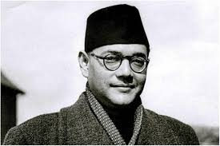

Netaji Subhas Chandra Bose

Netaji Subhas Chandra Bose was an Indian nationalist whose defiant
patriotism made him a hero in India. He was a prominent leader in the
Indian independence movement and is best known for his role in
establishing the Indian National Army (INA).
Biography
Born on January 23, 1897, in Cuttack, Odisha, Bose was an influential
leader who believed in the use of force to gain independence for India.
He formed the Indian National Army to fight British rule and sought
international support for India's freedom.
Timeline
-
1897: Born on January 23 in Cuttack, Odisha, India.
-
1919: Graduated from the University of Calcutta with
a degree in philosophy.
-
1920: Went to England to prepare for the Indian Civil
Services (ICS) exam and passed it with distinction.
-
1921: Resigned from the Indian Civil Service to join
the Indian freedom struggle.
-
1924: Imprisoned in Mandalay by the British colonial
government for his nationalist activities.
-
1930: Elected as the Mayor of Calcutta, where he
worked on social reform initiatives.
-
1938: Elected President of the Indian National
Congress.
-
1939: Resigned from the Congress due to differences
with Mahatma Gandhi and formed the Forward Bloc.
-
1941: Escaped house arrest in India and traveled to
Germany to seek support for India's independence.
-
1942: Began the formation of the Indian National Army
(INA) with support from Axis powers.
-
1943: Arrived in Japan, formally took command of the
INA, and established the Azad Hind Radio.
-
1944: Launched the "Chalo Dilli" (March to Delhi)
campaign to free India from British rule.
-
1945: Reported to have died in a plane crash on
August 18 in Taiwan.
Major Achievements
Founded the Indian National Army (INA)
Established the INA in 1942 to fight against British colonial rule,
rallying Indian soldiers and supporters from various countries.
Established the Azad Hind Government
Created the Azad Hind government in exile in 1943, gaining
international recognition and support for the Indian independence
movement.
Gained International Support
Formed alliances with countries like Germany and Japan during World
War II, seeking to leverage global conflicts for India's freedom.
Inspired with the Slogan
"Give me blood, and I will give you freedom,"
which became a rallying cry for many Indians in the struggle for
independence.